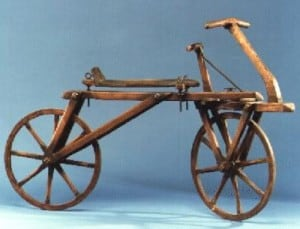

DÍA MUNDIAL DE LA BICICLETA
Primer Bicicleta

El Día Mundial de la Bicicleta o Día de la Bicicleta se celebra en todo el mundo cada 19 de abril con la finalidad de promover el uso de este medio de transporte, llamar la atención sobre los derechos de los ciclistas y destacar sus beneficios para la salud y para la movilidad sostenible. La fecha hace referencia al 19 de abril de 1943, cuando Albert Hofmann, conocido como «el padre del LSD», realizaba en su laboratorio un autoexperimeto con una sustancia para determinar sus efectos psicotrópicos, tras el cual su regreso a casa en bicicleta se tornaría famoso.
La bicicleta sí es efectiva como medio de transporte para distancias no tan extensas, para usarla dentro de una ciudad o pueblo es de mucha utilidad.
El uso de la bicicleta está extendido en casi todo el continente europeo. En países como Holanda, Suiza, Alemania, unas zonas de Polonia y en los países nórdicos; se ha convertido en uno de los primordiales medios de transporte. Pasando a Asia, fundamentalmente en China y La India, es la primera forma de transporte.
Los diferentes diseños de las bicicletas están basados en su funcionalidad: para que tipo de terreno, desarrollo de velocidad, menor peso o mayor fortaleza, etc.
1.Bicicletas de Montaña (MTB)El 19 de abril, se celebra el Día Mundial de la Bicicleta con el objetivo de promocionar este medio de transporte y llamar la atención sobre los derechos de los ciclistas.
Se celebra este día, porque el 19 de abril de 1943 el doctor Albert Hofmann, padre del LSD, ingirió a propósito 250 µg de LSD. Tras ingerir la sustancia, Hofmann sintió que le costaba hablar de forma inteligible y pidió a su asistente de laboratorio, que estaba al tanto del experimento, que le acompañase en su viaje a casa en bicicleta, pues, por las restricciones del período de guerra, no había automóviles disponibles.